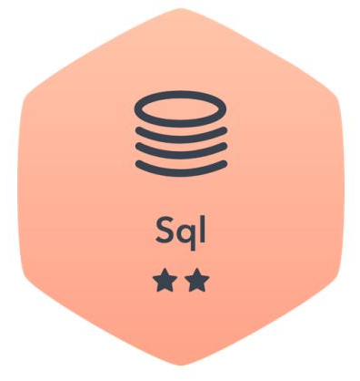
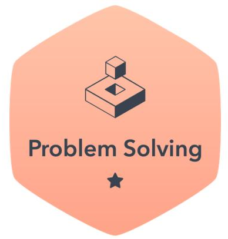
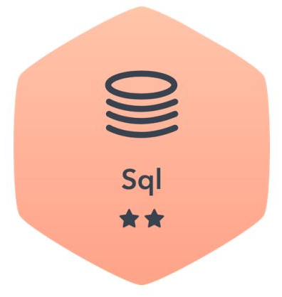
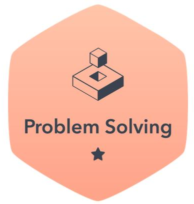

DAT102x: Microsoft Professional Capstone : Data Science
Jul 2018 – Aug 2018
This project presents a prediction of the rate of heart disease (per 100,000 individuals) across the United States at the county-level from other socioeconomic indicators. We also need to find how poverty and other factors influence health, which may help to understand what indicators are related to heart disease prevalence rates in counties across the United States.
The data is compiled from a wide range of sources and made publicly available by the United States Department of Agriculture Economic Research Service (USDA ERS). There are 33 variables in this data set. Each row in the data set represents a United States county, and the data set we are working with covers two particular years, denoted a, and b, having four types of categories- area, demographic, economic and health indicators which influence heart disease mortality rate.
Malware signature detection using honeypot in virtualised network
May 2012
The Virtual-Box Host-only network is used to connect the virtual OS’s Ubuntu-10.0-LTS, Fedora 15 and Windows XP to the Host OS Windows 7. The Honeypot machines have been deployed on Fedora 15 machine. A packet analyzer is a software program that I developed to scan, intercept and log traffic passing over a network , and saves the packet captures into pcap files as well as in .csv log files. This packet analyzer, written in C, is splitting a network packet into various header and extract the features like , source MAC address, destination MAC address, source IP address, destination IP address, source Port, destination port, TTL, checksum, protocol. Metasploit is used to aid in penetration testing and IDS signature development. I have created training data for the malware classification with fields src_port, dst_port, ttl, chksum, class. For the given set of attributes the hypothesis I have assumed is that “Any Traffic directed to the honeypot are considered malicious.” So any traffic directed to the honeypots has been considered “malicious” and other Traffic is considered as “benign” on network. I have used J48 graft algorithm , which is a decision tree classifier in Weka (Data mining tool), to classify test data into “benign” or “malicious”, based on given features. After performing the decision tree analysis, we have a predictive model that can identify “benign” and “malicious” traffic, which helps to build additional firewall rules (e.g. iptables) to drop offending traffic based on the decision tree results and also generate IDS rules to detect malicious traffic and captures and report identified high priority malicious traffic in an organization.
 


